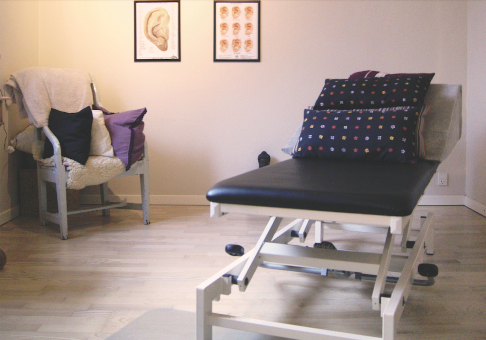
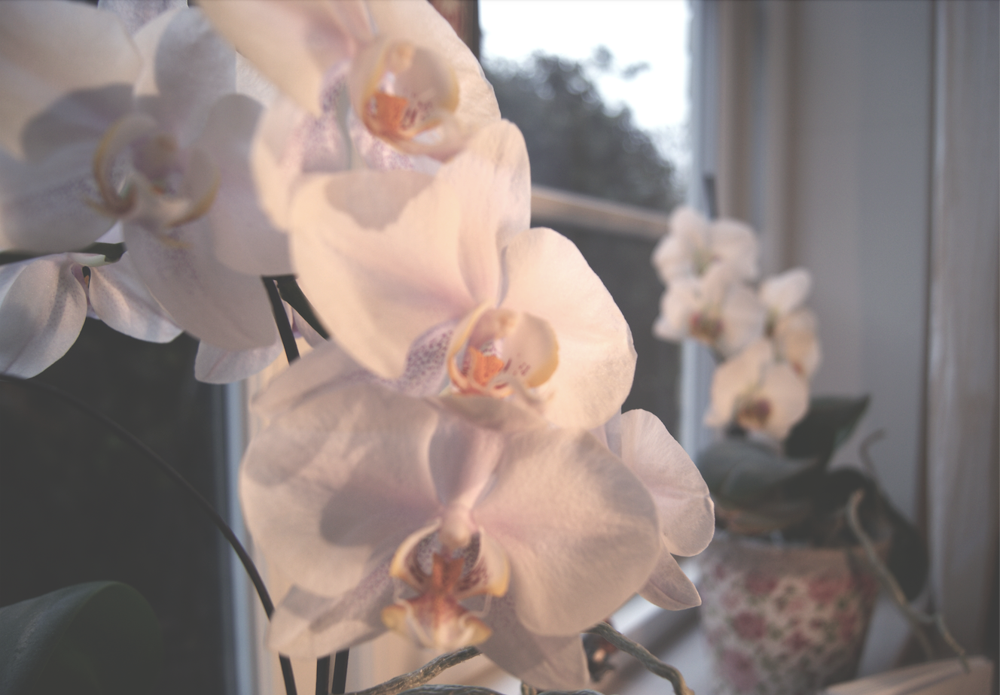

Om Klinikken
Din BehandlerMit navn er Nina Riisager. Jeg er eksamineret og RAB godkendt zoneterapeut, fysiurgisk massør, samt uddannet sygeplejerske med 25 års erfaring. Heraf 8 år fra lungemedicinsk afdeling, 10 års erfaring med for tidligt fødte og syge børn, fra neonatal og almen børneafdeling. Nuværende lægepraksis i deltidsstilling. “Det jeg lægger vægt på i klinikken og under behandlingen er, at der skal være ro, og man får mulighed for at komme helt ned i en zen-tilstand, så man er mere modtagelig” |

|
KlinikkenKlinikken er indrettet i privatbolig, på stille vej, ca. 5 min fra Næstved centrum. Her er en afslappende atmosfære, med mulighed for at lytte til stille instrumental musik under behandlingen. Det er vigtigt at kroppen er afslappet, hvorfor snak, mobiltelefon og andre aktiviteter ikke bør finde sted undervejs. Der benyttes kun hjemmelavede cremer, af økologisk bivoks og økologiske olier til behandling. Derudover lever hygiejnen naturligtvis op til gældende regler ift. corona. |

|
 |  |